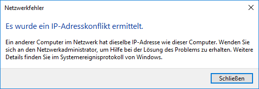

eBlocker Hilfe > FAQs > Netzwerk
In einigen seltenen Fällen, kann Windows 10 nach dem Start des Betriebssystems einen "IP-Adresskonflikt" melden.

In der Regel reicht es, die Meldung zu schließen. Nach wenigen Sekunden bekommt Windows 10 seine IP Adresse anschließend zugewiesen.